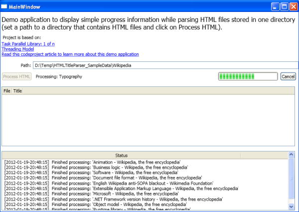
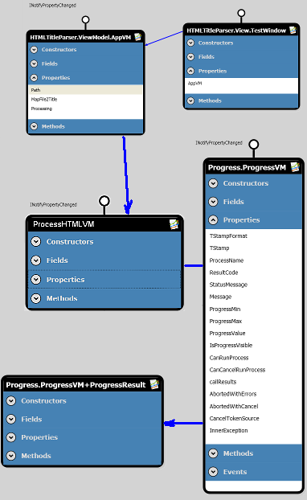

Introduction
The introduction of WPF and the Task Parallel Library have made life using C# much easier than ever before. It is time to say goodbye to BackgroundWorker,
UI freeze, events, and all those things that do their job but are not the full price, if you want to develop professional applications that are easy
to use, responsive, and reliable - while being produced at a competitive price.
In this article, I am going show a ViewModel that can be used to fire off asynchrony process sing and observe its progress towards completion through WPF binding.
I name this pattern ProgressViewModel, because it sits between the view and the model and eases the life of both the UI designer and the developer,
since both have a set (and yet flexible) interface for connecting background processing with an appealing GUI.
This is a stable solution that can be used with C# 4.0 and later, and we do not have to wait for C# version 5.0 (or have to use the Async CTP yet)
to implement background processing without all the worries about communication/thread synchronization/thread context, and so forth.
It is assumed that you already know C# and have a working knowledge of WPF, the Task library, and XAML.
StyleCop
I use StyleCop in my projects to make the code readable in a uniform way. So, you can either download and install StyleCop, or edit/remove
the corresponding entries in each .csproj file (if you should get an error when compiling the project):
<Import Project="$(ProgramFiles)\MSBuild\StyleCop\v4.5\StyleCop.Targets" />
Background
I soon hit a few rocks when I started to use WPF. Sometimes the GUI would freeze and sometimes
exceptions would fly and leave me clueless for a while.
This is yet another attempt to provide a stable software design for getting past these initial problems and hitting the ground running when developing long running processes with WPF.
The Demo Application
The demo application is a program that scans a directory for HTML files and uses the HTML Agility Pack to parse and display the title of each file.

This article series comes in two parts. You are reading part 1. In this part, we are looking at an application that accepts a path to a file system folder
in which HTML files are stored (you can download the attached sample data from Wikipedia (865.75 KB)
and point the application to the uncompressed directory if you do not have any HTML laying around on your hard disk).
In any event, point the Path to a location where HTML files are stored and click the Process HTML button.
And enjoy the rich progress feedback while processing your request 
Using the Code
Re-using the Code
This project can be re-used by including the Progress DLL in another project and implementing a derived version
of the ProgressVM class (in this project, that is ProcessHTMLVM). But let us have an overview of how it works before letting it work for us...
The Software Design
In my WPF code, I am now using a layered architecture where I attach an ApplicationViewModel to the DataContext of the MainWindow and put
all other ViewModels underneath this ViewModel (expose other ViewModels as properties and methods of the ApplicationViewModel). Let's look at an overview
of the class design and explain the call sequence further below.
|  |
The diagram on the left side gives us a bird's eye view of the architecture of the ProgressViewModel.
The heart of it is the ProgressVM class (which lives in a separate DLL to make re-usage a simple matter of referencing it).
The ProgressVM class exposes properties that can be used to control and view the progress shown in a progress control (ProgressMin,
ProgressMax, and ProgressValue) and whether:
- a start and stop button should be enabled (
CanRunProcess)
- a progress should be shown (
IsProgressVisible)
- a cancel button should be enabled (
CanCancelRunProcess)
The method that does the main work here is RunProcess. This method fires the asynchronous process through a Func<> statement
that is handed down to it from the ApplicationViewModel.
But the ApplicationViewModel (AppVM) and ProcessVM are not directly connected. The connecting element is the ProcessHTMLVM class
which inherits from ProcessVM. ProcessHTMLVM lives in AppVM as a field called mProcessing and is an exposed property
called Processing.
So, when we bind to a ProgressViewModel property in ProcessHTMLVM, we go through
the MainWindow->DataContext (see the MainWindow constructor) and the Processing property in the AppVM class.
The ProgressResult class is a container class to hold the result (or pointers to it) that is obtained from the long processing task. We revisit this further below. |
The Call Sequence
The following XAML code defines the Process HTML button in the MainWindow class:
<Button Content="{Binding RelativeSource={RelativeSource Self}, Path=Command.Text}"
Command="cmd:Main.ProcessHTML"
CommandParameter="{Binding Path=Path}"
VerticalAlignment="Center" Grid.Row="2" Margin="3,6,3,6" />
The Command bit binds the button to the ProcessHTML command defined in the static Main class in
View/Main.cs. It tells WPF, whenever a user
clicks this control, then execute this command with the content of the Path property exposed by the AppVM.
The Path property of the AppVM contains the current directory path because it is bound to the Text property
of the Path textbox:
<TextBox Text="{Binding Path=Path,UpdateSourceTrigger=PropertyChanged}"
HorizontalAlignment="Stretch" VerticalAlignment="Center"
Grid.Column="1" Grid.Row="1"/>
Now that's where the input comes from, but let's continue to look at how the command is invoked with that parameter. The actual method to be executed
via the ProcessHTML command is declared in the BindCommands method in the code-behind of the MainWindow class.
CommandBindings.Add(new CommandBinding(Main.ProcessHTML,
(s, e) => this.AppVM.ProcessHTMLDirectory(e,
this.prgProgress,
this.txtProgressStatus,
null, this.lstStatus, null),
(s, e) => this.AppVM.CanExecute_IfNoProcessRuns(s, e)));
I know this looks awful at first sight, but it is just another way to bind a (to be executed) method to a command.
We use a Lambda expression with the CommandBindings class
to tell WPF that it should execute:
CanExecute_IfNoProcessRuns: determine whether this command is enabled or not, and execute- the
ProcessHTMLDirectory method to execute this command.
The ProcessHTMLDirectory method in the AppVM class is called with a host of controls as parameters (ProgressBar, etc.) to bind the ViewModel
to at run-time. I used this initially because I destroy the ProcessHTMLVM object each time I start a new process and I thought that I would have
to dynamically re-bind (with code).
It turns out that the binding in the XAML is enough, because WPF re-binds correctly when the Processing property is changed. So, I could either remove the property binding
in the XAML (because there is a binding in the code-behind) or remove the call to BindStatusBarItems in the ProcessHTMLDirectory method (which is more
likely what I would do).
But I opted to leave things as they are so people can actually see how equivalent expressions for binding in code-behind and XAML are.
At any rate, the ProcessHTMLDirectory method sets up:
- a new object of type
ProgressVM (or more specifically ProcessHTMLVM) in the BindStatusBarItems method,
- registers a callback method
ProcessHTML_Results that is executed when processing is finished (with or without errors),
- calls
SetProgressVisibility to switch progress controls to Visible from Collapsed state,
- puts the path string into a
Dictionary object and hands it over to the RunProcess method in the ProcessHTMLVM class.
I am using the Dictionary approach to pass parameters in and get results out. Because, I think this is simple enough to deal with while
I do not have to change the signature of the RunProcess method. This way, I can apply the same method of instantiating the async
ProgressViewModel framework over and over again, while doing completely different things with each implementation...
One important parameter of the RunProcess method call is the ProcessHTMLDirectory bit. This is actually a method handed over
to RunProcess. RunProcess uses this method to do the asynchronous processing via the Func<> delegate approach. The code inside RunProcess shows that it:
- initiates a
Task class via its factory
- creates a new
CancelToken to let the executing process know when a user would like to cancel a running process, and
- starts the actual processing (
ProcessHTMLVM.ProcessHTMLDirectory) via execFunc(callParameters)
Now looking into ProcessHTMLVM.ProcessHTMLDirectory, we can see how the Dictionary call parameter is unpacked and the HTML
processing is implemented there. Setting values such as this.ProgressMax inside that method, -are, via AppVM and binding, reported back
to the progress controls of the UI.
The result of the ProcessHTMLDirectory method is passed back to ProcessHTML_Results in AppVM via the this.callResults.Add
statement at the bottom of the class.
The ProcessHTMLVM class defines keyString values (in the fields region) to be used for the parameter and
a result Dictionary and the ProcessHTMLDirectory method to be executed. The ProcessName property can be used to output a
meaningful string to the user if we need to display a descriptive name for the running background process. Everything else is inherited from ProgressVM.
Summary
Overviewing the sequence of executing methods described above, we can see the command being initiated in the MainWindow, being converted in a method call
in the AppVM, being processed in ProcessHTMLVM, and being passed back to ProcessHTML_Results in AppVM.
Noteworthy is also the Cancel command which executes the CancelProcessing method in the AppVM class.
That call is passed on to the ProgressVM object (if there is any) and inside that, CancelToken is set to scream at the running process: Get out of here!
Points of interest
I discovered this pattern writing an application that processes about 20 commands, always using the same template, I soon found it easy and relaxing writing responsive
and reliable applications. I hope it can help others to concentrate on their task at hand and not having to worry about all these tiny techniques and twists cast into the Progress DLL.
Part two of this article
will develop the idea shown here a little bit further. We are going to expose properties for viewing multiple progress values when processing complex algorithms.
Please comment and vote on this to let me know what you think about this.
History
- 20 January 2012: Initial creation.